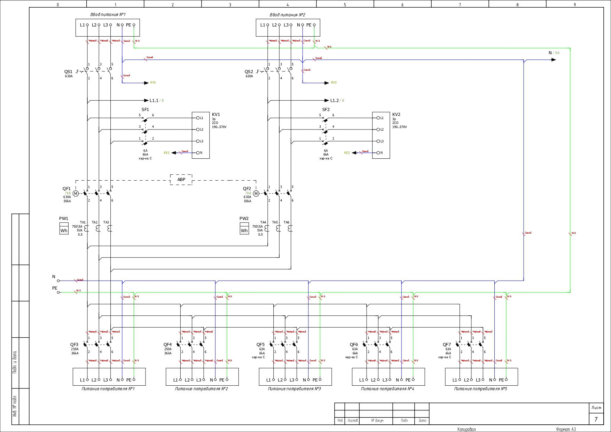
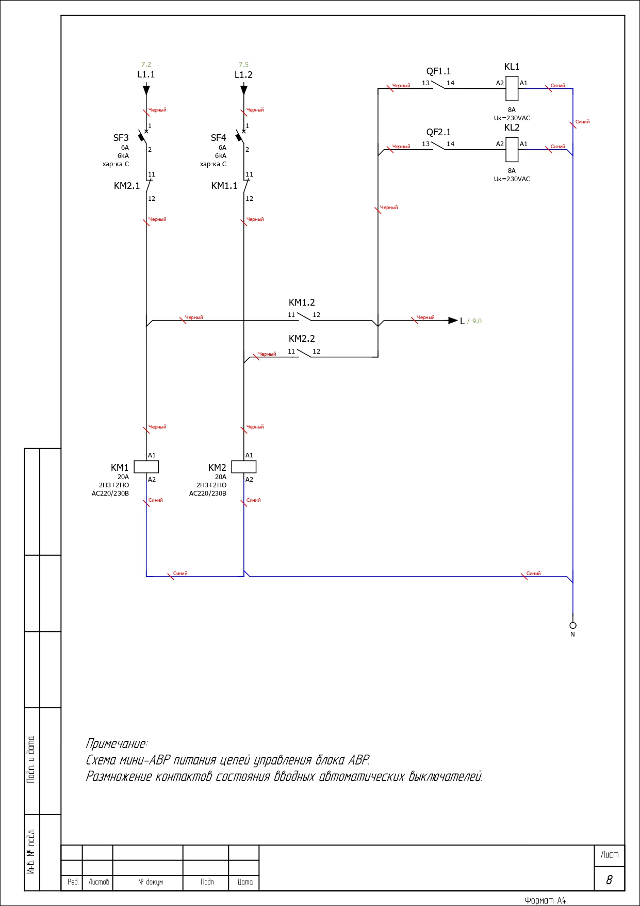
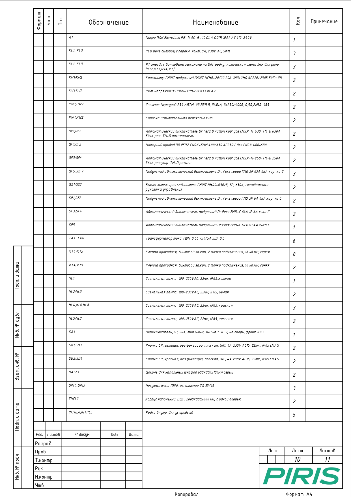
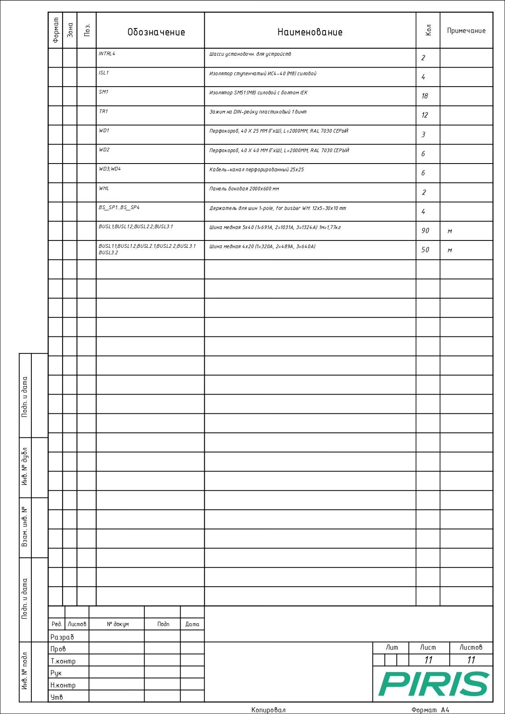

Быстрее собирать проектную часть
Готовые решения, документация и поддержка инженеров помогают быстрее закрывать задачи по НКУ без ручного поиска схем и спецификаций.
готовые решения НКУ
Рабочая среда, где проектировщик быстрее находит готовые решения, берёт документацию в проект и держит связь с инженерами PIRIS.
PIRIS — платформа готовых решений НКУ для проектировщиков и проектных компаний. Используйте проверенные шкафы АВР, ВРУ, ГРЩ и шкафы управления в своей документации, получайте готовые материалы для проекта и фиксированное вознаграждение после прохождения экспертизы / стадии Р.
Проектировщик может уже собрать технически корректное решение по ВРУ, АВР, ГРЩ или шкафу управления, но для принятия проекта заказчику часто нужен ориентир по стоимости. В этот момент инженер вынужден идти к производителям и запрашивать расчёт.
Для производителя такой запрос не всегда приоритетен: проектировщик не принимает решение о закупке, а значит расчёт может превратиться в работу без гарантии заказа. В итоге проектировщик остаётся между готовым техническим решением и коммерческой частью, которую сложно быстро подтвердить.
Проектировщик берёт не просто карточку товара, а готовый инженерно-коммерческий модуль: артикул, параметры, документацию, ориентир по стоимости и поддержку инженеров PIRIS.
Такое решение проще заложить в проект, согласовать внутри организации и передать дальше по цепочке — от экспертизы до закупки.
Понятная идентификация решения для проекта и дальнейших уточнений.
Принципиальные схемы, спецификации, габаритные чертежи и внешние виды.
Ориентир по сметной стоимости и привязка к реально поставляемому оборудованию.
Прямой диалог с инженерами и менеджерами PIRIS в рамках проекта.
Вот так выглядит габаритный чертёж: шкаф показан с размерами, компоновкой и привязками, которые нужны для включения решения в проект.
Внешние виды помогают быстро понять исполнение шкафа, расположение элементов и то, как решение будет выглядеть в составе объекта.
Принципиальные схемы уже подготовлены для работы проектировщика: видны цепи, аппараты, логика подключения и основные электрические связи.
Дополнительные листы схем раскрывают детали решения, чтобы не собирать документацию вручную из разрозненных источников.
Спецификация показывает состав оборудования и помогает быстро перенести решение в проектную документацию.
Внутри карточки решения есть комплект материалов, который можно использовать дальше в проекте, согласовании и закупке.






Готовые решения, документация и поддержка инженеров помогают быстрее закрывать задачи по НКУ без ручного поиска схем и спецификаций.
Единая база проработанных решений снижает количество повторной работы, ускоряет выпуск документации и помогает команде вести больше проектов.
Проектная компания зарабатывает не только на стоимости проектных работ, но и на своей пропускной способности: сколько проектов команда может качественно выпустить за месяц.
Готовые решения PIRIS сокращают время на подбор, оформление и согласование НКУ. Проектировщик быстрее добавляет в проект шкафы АВР, ВРУ, ГРЩ и шкафы управления, а компания может брать больше задач без пропорционального роста нагрузки на инженеров.
АВР, ВРУ, ГРЩ или шкаф управления с понятными параметрами.
Используйте готовые материалы, схемы, спецификации и сметную стоимость.
Укажите объект, стадию, артикулы и загрузите документацию.
После экспертизы / стадии Р фиксированная сумма начисляется в кабинете.
АВР, ВРУ, ГРЩ, ШУН и другие типовые решения для проектной документации.
Артикулы, состав, техническая логика, ориентиры по стоимости и применению.
PDF, схемы, спецификации, опросные листы и материалы для согласования.
Проект, стадия, заказчик, город и выбранные решения фиксируются в кабинете.
Черновик, Новый проект, На проверке, Подтвержден, Успешно реализован, Не принят / Отклонен.
Суммы, подтверждённые решения и будущие выплаты видны в одном месте.
Диалог с командой PIRIS внутри карточки проекта, без потери контекста.
Это не скидка, не комиссия за продажу и не процент от сделки. Выплата начисляется за то, что подтверждённое решение PIRIS использовано в проектной документации.
Начисление после экспертизы / стадии Р
Выплата не зависит от фактической закупки оборудования.
Решения PIRIS закладывались в проектную документацию, проходили дальнейшие стадии и приводили к заказам оборудования.
АВР, ВРУ, ГРЩ и шкафы управления для реальных объектов.
Платформа связывает проектные решения с оборудованием, которое можно изготовить.
Когда решение PIRIS заложено в проект, участники закупки приходят за КП по нему.
Проектировщикам НКУ и проектным компаниям, которые закладывают в документацию АВР, ВРУ, ГРЩ, ШУН и другие шкафы управления.
После подтверждения, что решение PIRIS прошло экспертизу / стадию Р.
Нет. Выплата начисляется после подтверждения, что решение PIRIS прошло экспертизу / стадию Р. Дальнейшая закупка зависит от заказчика, генподрядчика или снабжения.
Да. Формат участия, реквизиты и получатель выплат указываются в кабинете.
Обычно достаточно данных по объекту, стадии проекта, выбранных артикулов PIRIS и загруженной проектной документации.
Внутри проекта есть диалог с инженерами PIRIS, где сохраняется контекст проверки.
Используйте PIRIS как рабочий слой между проектированием НКУ, документацией, инженерной поддержкой и прозрачной системой выплат.